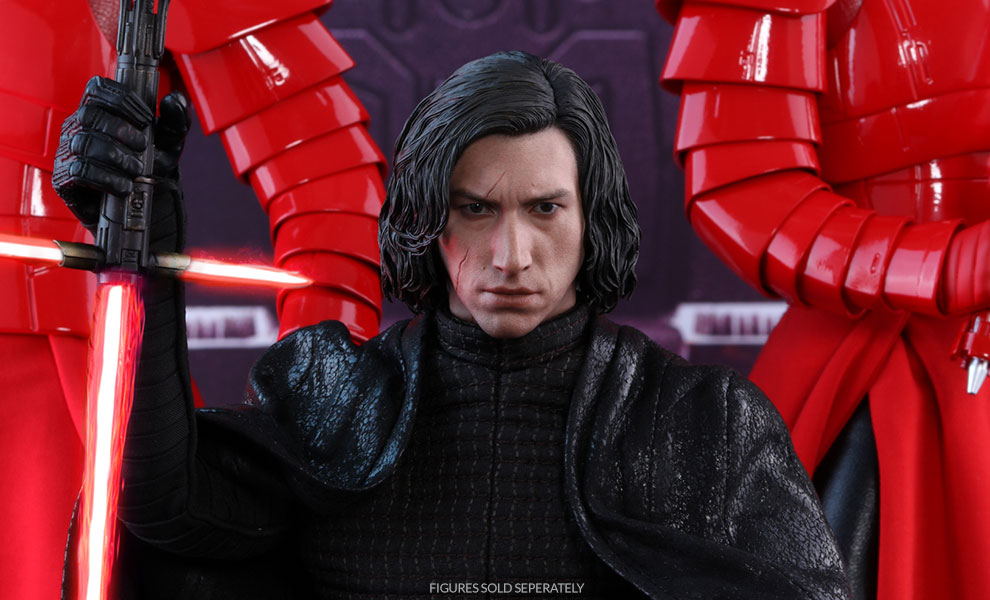

Force Imbalance
Star Wars has been a series that brought out our geekiness and we were finally proudly ready to embrace it. Rooting for Luke, Princess Leia and Han Solo, waiting with bated breath for the end of darkness, Darth Vader and Emperor palpatine's regime is such an iconic plot that it managed to capture audiences from all generations .
The newer chapters focus on Princess Leia and Han Solo's son Ben Solo. Ben Solo was the most troubled child having Luke Skywalker as his uncle and Leia and Solo for parents only made things difficult for him. The idealism of his parents' heroship if wasn't enough he was also the grandson of Anakin Skywalker (Darth Vader). The pull of darkness and light inside of him created such a catastrophic condition that he was subjected to skepticism and mistrust which led to his drifting away from his family.
The imbalance of force was such that on one hand Snoke started seducing him into darkness and on the other his uncle and his master attempted to kill him which led to his hatred towards light.
While his crimes aren't justifiable we can still see hope and light in the iconic scene of him and Rey fighting together as a team in Chapter 8.
Kylo Ren with all his faults is only a lonely human who has faced abandonment for too many times and from people anyone would least expect it from. The ignorance of his parents led to estranged relationship between them, Luke's betrayal took a toll on him and he did what he thought would be best for his survival and made darkness his solace.